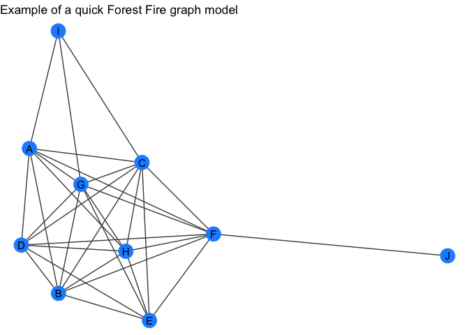
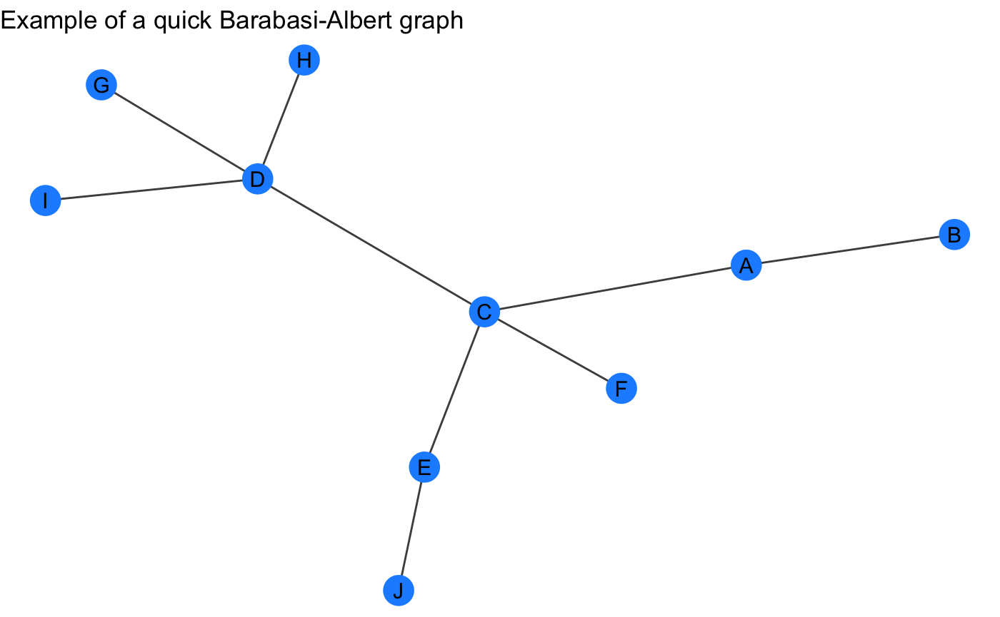

These are a bunch of functions that I find myself declaring and rewriting in a many scripts and analyses.
Installation
You can install ‘jhcutils’ with:
devtools::install_github("jhrcook/jhcutils")Full documentation: ‘pkgdown site’
General Utilities
n_unique - return the number of unique values in a vector.
a <- c(1, 2, 2, 3, 4, 5)
n_unique(a)
#> [1] 5
b <- list(c(1, 2, 3, 4), c(1, 2, 3, 4, 5))
n_unique(b)
#> [1] 2
n_unique(b, to_unlist = TRUE)
#> [1] 5unique_na - return the unique values in a vector, omitting NA.
a <- c(1, 2, 3, NA, 3)
unique_na(a)
#> [1] 1 2 3
b <- list(c(1, 2, 3, NA), c(1, 2, NA, 5))
unique_na(b)
#> [[1]]
#> [1] 1 2 3 NA
#>
#> [[2]]
#> [1] 1 2 NA 5
unique_na(b, to_unlist = TRUE)
#> [1] 1 2 3 5minmax - set limits on a vector of numeric values.
Tidygraph
quick_forestfire - wrapper around tidygraph::play_forestfire except that it will return a tidygraph object with the node attribute "name".
forest_gr <- quick_forestfire(10)
forest_gr
#> # A tbl_graph: 10 nodes and 19 edges
#> #
#> # An undirected simple graph with 1 component
#> #
#> # Node Data: 10 x 1 (active)
#> name
#> <chr>
#> 1 A
#> 2 B
#> 3 C
#> 4 D
#> 5 E
#> 6 F
#> # … with 4 more rows
#> #
#> # Edge Data: 19 x 2
#> from to
#> <int> <int>
#> 1 1 2
#> 2 1 3
#> 3 2 3
#> # … with 16 more rows
my_plot_fxn(forest_gr) +
labs(title = "Example of a quick Forest Fire graph model")
quick_barabasi - wrapper around tidygraph::play_barabasi_albert except that it will return a tidygraph object with the node attribute "name".
barabasi_gr <- quick_barabasi(10)
barabasi_gr
#> # A tbl_graph: 10 nodes and 9 edges
#> #
#> # An undirected simple graph with 1 component
#> #
#> # Node Data: 10 x 1 (active)
#> name
#> <chr>
#> 1 A
#> 2 B
#> 3 C
#> 4 D
#> 5 E
#> 6 F
#> # … with 4 more rows
#> #
#> # Edge Data: 9 x 2
#> from to
#> <int> <int>
#> 1 1 2
#> 2 1 3
#> 3 3 4
#> # … with 6 more rows
my_plot_fxn(barabasi_gr) +
labs(title = "Example of a quick Barabasi-Albert graph")
quick_graph - randomly selects one of the above random graphs.
quick_gr <- quick_graph(10)
#> using barabasi_albertrecursive_graph_join - recursively join a list of tidygraph objects.
gr_list <- purrr::map(c(5, 10, 15), quick_forestfire)
gr <- recursive_graph_join(gr_list)
gr
#> # A tbl_graph: 15 nodes and 85 edges
#> #
#> # A directed acyclic multigraph with 1 component
#> #
#> # Node Data: 15 x 1 (active)
#> name
#> <chr>
#> 1 A
#> 2 B
#> 3 C
#> 4 D
#> 5 E
#> 6 F
#> # … with 9 more rows
#> #
#> # Edge Data: 85 x 2
#> from to
#> <int> <int>
#> 1 1 2
#> 2 2 3
#> 3 2 4
#> # … with 82 more rows
my_plot_fxn(gr) +
labs(title = "Example of joining 3 forest fire graphs")
Additions
If you have any recommended additions, please open an issue.